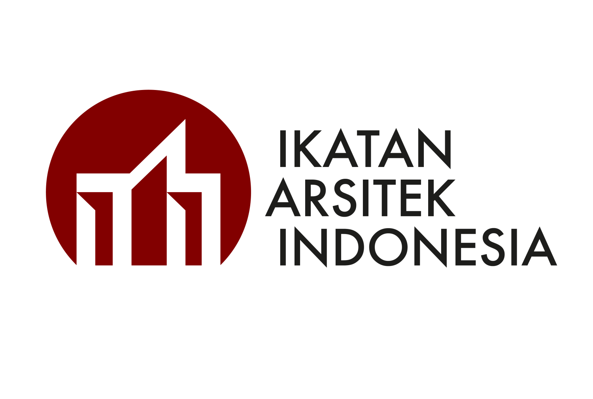

Layanan Penerbitan Ijazah Universitas Tanjungpura
Temukan layanan penerbitan ijazah yang sesuai dengan kebutuhan Anda. Pilih jenis layanan untuk melihat informasi, kelengkapan berkas, dan tahapan pengajuannya secara terintegrasi dan akuntabel.

Ketidaksesuaian pas foto akan menunda pencetakan fisik dan pengesahan ijazah oleh Biro Akademik dan Kemahasiswaan.
Pilih Jenis Layanan Ijazah
Setiap kategori memiliki alur verifikasi berkas, instrumen legalitas, dan dasar hukum yang berlaku di lingkungan Universitas Tanjungpura.
Penerbitan Baru
Pengajuan penerbitan ijazah pertama kali bagi lulusan yang telah dinyatakan yudisium pada periode wisuda aktif Untan.
Penerbitan Perbaikan
Pengajuan perbaikan data atau koreksi kesalahan redaksional/ejaan nama, tanggal lahir, NIK, dan gelar pada fisik ijazah terdahulu.
Penerbitan Ulang
Pengajuan penggantian dokumen bagi ijazah yang mengalami kerusakan berat atau hilang total sesuai ketentuan hukum dan peraturan rektor.
Pencetakan Ulang
Pengajuan pencetakan kembali salinan resmi ijazah atau sertifikat pengganti ijazah berdasarkan arsip rektorat yang telah diverifikasi.
Ijazah TTE (Tanda Tangan Elektronik)
Sertifikasi BSrE - Badan Siber dan Sandi NegaraLayanan penerbitan ijazah digital asli dengan sertifikat elektronik terenkripsi BSrE yang dapat divalidasi keabsahannya secara instan di mana saja. Saat ini sistem sedang dalam tahap pengujian integrasi keamanan data universitas.
Tahapan Resmi Pengajuan Layanan Ijazah
Ikuti tahapan resmi untuk memastikan kelancaran verifikasi dokumen Anda di Biro Akademik dan Kemahasiswaan (BAK) Rektorat Untan.
Pilih Jenis Layanan
Tentukan kategori pengajuan yang sesuai: Penerbitan Baru, Perbaikan Data, Penerbitan Ulang, atau Pencetakan Ulang.
Periksa Persyaratan & Berkas
Siapkan dokumen pendukung fisik dan digital (pas foto doff 4x6, KTP, akta lahir, atau surat kehilangan dari kepolisian).
Isi Formulir & Verifikasi
Lengkapi formulir permohonan resmi dan dapatkan nomor registrasi tiket permohonan untuk proses audit tim akademik.
Pantau Status & Pengambilan
Lacak validasi tanda tangan rektorat secara online, dan ambil dokumen fisik di Biro Akademik dan Kemahasiswaan (BAK) Rektorat Untan.
Ringkasan Persyaratan & Dokumen
Pilih tab layanan di bawah untuk meninjau prasyarat spesifik yang wajib dipenuhi pemohon sebelum proses pencetakan.
Kelengkapan Penerbitan Ijazah Baru
Wisuda Periode Berjalan
Penerbitan baru diproses otomatis berjenjang. Pengambilan fisik ijazah asli untuk lulusan baru dilakukan langsung di Subbag Akademik Fakultas masing-masing setelah jadwal wisuda/yudisium disahkan, bukan di loket BAK Rektorat.
Pusat HelpDesk & Jawaban Pertanyaan (FAQ)
Informasi panduan praktis seputar mekanisme penerbitan dan pengesahan ijazah di Universitas Tanjungpura.
Pusat HelpDesk Biro Akademik dan Kemahasiswaan (BAK) Untan
Butuh klarifikasi mengenai verifikasi ijazah, pengambilan fisik, atau pengesahan legalisasi? Tim administrasi akademik Universitas Tanjungpura siap melayani Anda sesuai standar pelayanan prima.